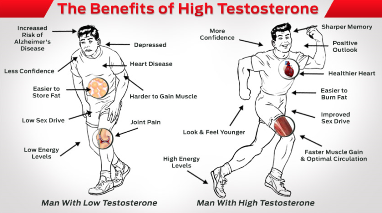

Daryush "Roosh" Valizadeh created ROK in October 2012. You can visit his blog at RooshV.com or follow him on Twitter and Facebook.


Testosterone levels in men are declining worldwide alongside sperm counts. The hormone that makes men men is disappearing from the human world. As a result, men are becoming more feminine and choosing the paths of weakness, homosexuality, and cuckoldry. While it’s necessary to look at the ideological causes of leftism in men, the biological reasons must not be ignored, and that starts with an understanding of the testosterone crisis.
Cultural programming alone cannot explain why Western men are becoming so womanly and fragile. A man who receives blue pill and feminist propaganda through university education, the media, or entertainment will not fully accept that propaganda unless his biochemistry is compatible to it, in part from having low testosterone. His mind accepts more feminine ideas because he is more feminine. You cannot accept masculine truths if your biology lacks a healthy level of testosterone, the chemical building block of masculinity.
Whether or not you accept my proposition that a man with a low testosterone level is more likely to be receptive to liberal ideas, the facts bear out that testosterone levels are declining every year (alternate link).
…testosterone concentrations dropped about 1.2% per year, or about 17% overall, from 1987 to 2004. The downward trend was seen in both the population and in individuals over time.
The decline is consistent with other long-term trends in male reproductive health, including decreases in sperm quality and increases in testicular cancer, hypospadias and cryptorchidism.
The strongest association was observed in same-aged men from different sampling years. For example, a 65-year-old in 2002 had lower testosterone levels than a 65-year-old in 1987.
Approximately 1 in 4 men have low testosterone, but the scientific bodies that set the numerical standards, particularly the United Nation’s World Health Organization, have a blatant interest in promoting “toxic masculinity” and downplaying the testosterone crisis. This interest is made bare with the execution of an agenda to feminize defenseless boys, their promotion of the world’s most rabid man-haters, and their multi-million dollar sponsorship of vagina-worship through UN Women, which aims to make every man a collared dog of an empowered female office worker.
The decrease is testosterone is coinciding with a decrease in sperm concentration. A French study showed that they are decreasing 1.9% per year.
Among a sample of 26 609 partners of totally infertile women undergoing an assisted reproductive technology (ART) procedures in the whole of France over a 17-year period, there was a continuous decrease in semen concentration of about 1.9% per year and a significant decrease in the percentage with morphologically normal forms but no global trend for motility.
Another study points to a worldwide decline.
In 1992, Carlsen et al. reported a large, global decline in sperm count for the period 1938-1990 based on 61 reports of sperm count from different countries around the world during that period. In 1997, Swan et al. reanalyzed the same data set using multivariate statistics. This reanalysis confirmed Carlsen et al., subject to constraints inherent in retrospective longitudinal studies of sperm count.
Testosterone is declining, sperm counts are declining, men are becoming infertile, and if a walk through my home town of Washington D.C. recently is a reliable indicator, they’re rapidly embracing homosexuality and transsexuality as normal lifestyles to live hopelessly sterile existences that are disconnected from their natural biological role, and one where they vote for feminist politicians like Hillary Clinton that want to usher us all into an androgynous hell where sex differences are eradicated.
Sperm counts are getting so bad that the anti-testosterone globalists at the World Health Organization have already lowered the normal standard. Otherwise, perhaps as many as 50% of Western men would be labeled clinically infertile. Imagine the news headline on that story.
Sperm count, or sperm concentration to avoid confusion with total sperm count, measures the concentration of sperm in a man’s ejaculate, distinguished from total sperm count, which is the sperm count multiplied with volume.[5] Over 15 million sperm per milliliter is considered normal, according to the WHO in 2010.[6] Older definitions state 20 million.[2][3]

If you believe that testosterone should decrease as you age, you have been taught a falsehood. If you’re healthy, it should remain stubbornly constant, even into your elderly years.
Handelsman and his team, however, found that serum (blood) testosterone levels did not decline with increasing age in older men who reported being in excellent health with no symptoms to complain of.
“We had originally expected age to have an effect on serum testosterone, so the findings were a bit of a surprise,” Handelsman said.
If we can conclude from the above studies that testosterone is declining independent of age, it’s worth investigating the cause. Most of the current science points to endocrine disrupting agents.
EDCs are everywhere. They lurk inside your house, leaching from human products such as personal hygiene products, chemical cleansers, or contraceptive drugs. They also end up in your food and drinking water, causing you to unknowingly ingest them.
EDCs pose a threat to men’s health as they interfere with testosterone production, causing men to take on more feminine characteristics.
Here’s one proof: in a number of British rivers, 50 percent of male fish were found to produce eggs in their testes. According to EurekAlert, 3 EDCs have been entering rivers and other waterways through sewage systems for years, altering the biology of male fish. It was also found that fish species affected by EDCs had 76 percent reduction in their reproductive function.
Endocrine disrupting agents are mostly found in plastic products and cleaning chemicals. Considering that your home is essentially bathed in these agents, and that most of your food is prepared on them, you can see how pernicious this problem is, affecting both boys and men.
Animal and cellular studies have found that some phthalates block the effects of testosterone on the body’s organs and tissues. Researchers set out to examine whether these chemicals, which are widely used in flexible PVC plastics and personal care products, had a similar effect in humans.
“We found evidence reduced levels of circulating testosterone were associated with increased phthalate exposure in several key populations, including boys ages 6-12, and men and women ages 40-60,” said one of the study’s authors, John D. Meeker, MS, ScD, of the University of Michigan School of Public Health in Ann Arbor, MI. “This may have important public health implications, since low testosterone levels in young boys can negatively impact reproductive development, and in middle age can impair sexual function, libido, energy, cognitive function and bone health in men and women.”
It’s important to know the signs of low testosterone. If you’re being exposed to harmful chemicals, your testosterone will likely see a chronic decrease over several years instead of experiencing a sudden drop that you can perceive. This is why it’s a good idea to get your testosterone level checked right now to establish a baseline count that can be compared to a future reading.
One of the most telling clinical symptoms of low testosterone is emotional changes that make you more moody, irritable, and depressed. In other words, having lot T turns you into a menstruating woman. Not only does the physiognomy of a male feminist degenerate into that of a soft, punchable mass of tissue, but he acts more like a woman, too. This is exactly why I believe that the increase in feminine behavior among men in the West is as due to biology as much as to culture. We simply cannot explain the rise of the cuckold through CNN, Hollywood, and universities alone.
The fact that testosterone is declining worldwide, and that it’s contributing to the rise of femininity in men, both in appearance and ideology, tells us that counter-propaganda and spreading red pills will not alone solve society’s leftward march. We can take over all major institutions today, and shower men with the truth, but their biology simply won’t be able to accept it because they have become more like women: cooperative, egalitarian, emotional, and socialist.
The next step we must take is to launch a scientific crusade to test the effects of all commercially used plastics on male testosterone levels, and to enact a ban of their use if a negative effect is found. If we can do it to the pesticide DDT, we can surely do it for any chemical that is destroying the very biological basis of masculinity.
This article was originally published on Roosh V.
Read More: The Origins Of Neomasculinity